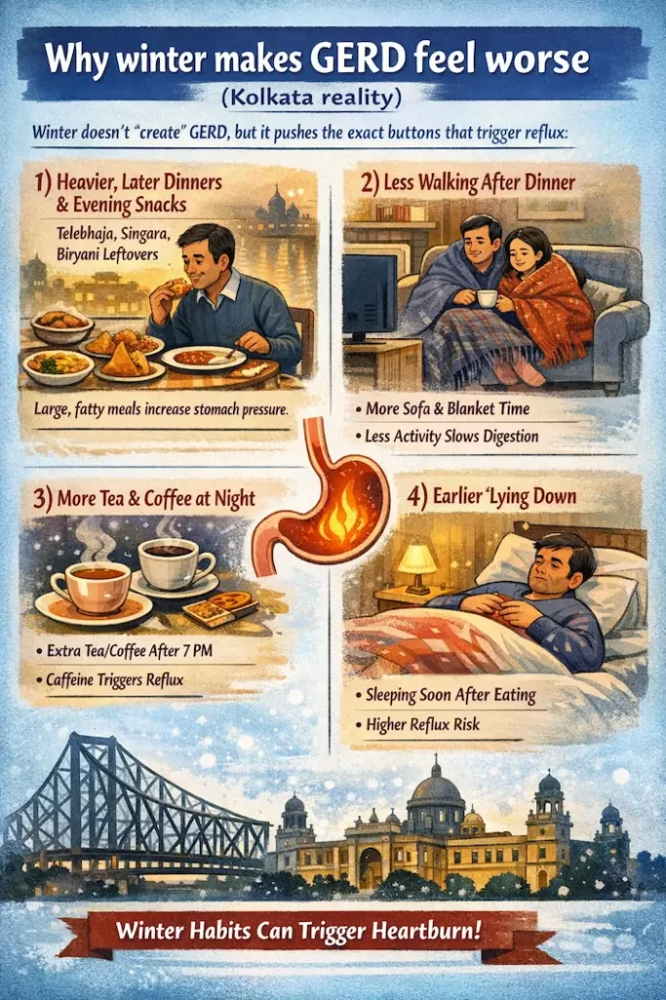
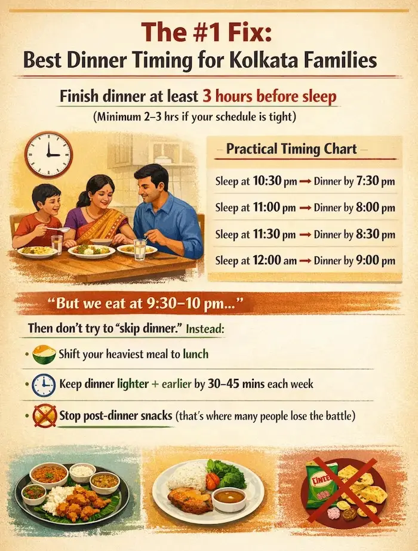

Kolkata winter feels “lighter” than North India—no snow, no extreme cold—yet night acidity (heartburn, sour burps, throat burn, coughing at night) suddenly becomes a daily complaint in many homes.
If your acidity mainly hits after dinner or while sleeping, it’s often not just “spicy food.” It’s usually a mix of timing + posture + winter habits. The good news: small changes can reduce symptoms fast, and you’ll know when it’s time to consult a GI specialist.
What is night acidity (GERD) — in simple words?
GERD happens when acidic stomach contents repeatedly flow back into the food pipe (esophagus). Heartburn often becomes worse at night because when you lie down, gravity isn’t helping keep acid down.
Why winter makes GERD feel worse (Kolkata reality)

Winter doesn’t “create” GERD, but it pushes the exact buttons that trigger reflux:
1) Heavier, later dinners + “evening snacks”
In Kolkata winter, dinners often get later (family time, guests, early darkness), and evening snacks increase: telebhaja, chop, singara, muri/jhalmuri, rolls, biryani leftovers. Large/fatty meals increase stomach pressure and can worsen reflux.
2) Less walking after dinner
Colder evenings = more sitting/sofa/blanket time. Lower activity can slow digestion for some people, and lounging soon after dinner raises reflux risk.
3) More tea/coffee (especially after 7 pm)
Many people add extra tea/coffee in winter. For some, caffeine can worsen reflux symptoms, especially late evening. Also, it can disturb sleep—making reflux feel even more intense.
4) Earlier “lying down”
Winter = earlier bed/lying down for warmth. Eating close to bedtime is one of the most consistent reflux triggers across guidelines.
The #1 fix: Best dinner timing for Kolkata families

Multiple medical sources recommend avoiding meals close to bedtime—commonly 2–3 hours, and for some people 3–4 hours is even better.
A simple Kolkata rule
Finish dinner at least 3 hours before sleep (minimum 2–3 hours if your schedule is tight).
Practical timing chart (easy to follow)
- If you sleep at 10:30 pm → finish dinner by 7:30 pm
- If you sleep at 11:00 pm → finish dinner by 8:00 pm
- If you sleep at 11:30 pm → finish dinner by 8:30 pm
- If you sleep at 12:00 am → finish dinner by 9:00 pm
“But we eat at 9:30–10 pm…”
Then don’t try to “skip dinner.” Instead:
- Shift your heaviest meal to lunch
- Keep dinner lighter + earlier by 30–45 minutes each week
- Stop post-dinner snacks (that’s where many people lose the battle)
What your dinner should look like (GERD-safe Kolkata plate)
There is no single perfect GERD diet—triggers vary—so think “lighter, less oily, not too spicy.” The ACG also notes trigger foods differ by person, so a personal trigger list helps.
Better dinner choices (Kolkata-style)
- Moong dal + rice (or soft roti)
- Lauki / potol / pumpkin / spinach (well-cooked)
- Grilled/steamed fish or chicken (less oil)
- Simple khichuri (light, not ghee-heavy at night)
- Warm water (not large gulps)
Common winter dinner mistakes
- Very oily kosha dishes at night
- Late-night tomato-heavy gravies + extra chilli
- Heavy sweets after dinner (mishti, chocolate)
- “Just one more cup of tea” at 9:30 pm
Night posture tricks that actually work
1) Elevate the head of the bed (not extra pillows)
Guidance commonly recommends raising the head end of your bed for night symptoms; a wedge or under-mattress elevation works better than stacking pillows.
2) Don’t lie down after dinner
Even if you’re not sleeping—avoid lying flat right after eating. Wait 2–3 hours.
3) Short walk after dinner (10–15 minutes)
A gentle walk after dinner is one of the simplest “Kolkata fixes.” No gym needed—just light movement.
A 7-night “Winter GERD Reset” (simple home plan)
Try this for one week:
- Dinner 3 hours before bed
- Light dinner (moong dal/khichuri/soft sabzi + low oil)
- No tea/coffee after 7 pm (switch to warm water)
- 10–15 min walk after dinner
- Bed head elevated if you get night symptoms
If your night acidity drops significantly, you’ve identified a lifestyle-driven reflux pattern.
When to stop self-treating and see a GI specialist (important)
Seek medical advice urgently if you have any red flags, such as:
- Trouble swallowing / food feeling stuck
- Vomiting blood or black, tarry stools
- Unintentional weight loss
- Frequent vomiting
These are warning signs mentioned by major medical sources.
Also consult a doctor if:
- Heartburn happens most days, or
- Lifestyle + OTC measures aren’t helping
PancreaCare by Advitya Healthcares: how we can help
At PancreaCare by Advitya Healthcares, we regularly see patients who think they have “simple acidity,” but actually have persistent GERD that needs a structured plan—sometimes lifestyle-focused, sometimes medicine-based, sometimes evaluation (like endoscopy) when symptoms are frequent or there are red flags.
Have a question this article does not answer?
Send us your reports. A specialist reviews them before you travel, so the first visit begins with a plan rather than a repeat test.